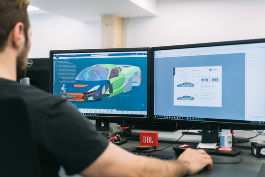
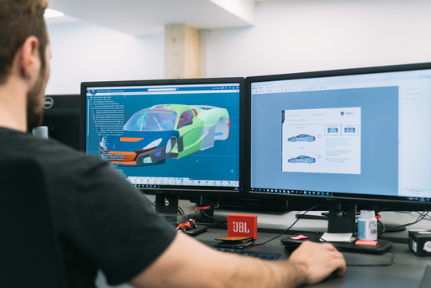

Generalni sponzor
Rimac Automobili
Osnovano 2009. godine sa sjedištem u Hrvatskoj, Rimac Automobili je tehnološko i proizvodno poduzeće koje razvija i proizvodi električna vozila visokih performansi i omogućuje inovativna tehnološka rješenja globalnim proizvođačima automobila. Temeljen na viziji osnivača i izvršnog direktora Mate Rimca, poduzeće je započelo kao projekt u garaži s idejom stvaranja najbržeg električnog automobila na svijetu. Prvi automobil takve vrste, Concept_One, bio je gotovo u cijelosti proizveden u Hrvatskoj u ograničenoj seriji, a predstavljen je 2011. godine. Stručnost u specifičnoj grani automobilske industrije danas ih postavlja kao ključnog dobavljača tehnologije i sustava elektrifikacije mnogim industrijskim partnerima, uključujući Porsche, Aston Martin, Koenigsegg, Renault, CUPRA i od sada, Automobili Pininfarina. Čitav razvoj i proizvodnja tehnologije i automobila je u umovima i rukama tima koji danas broji gotovo 500 zaposlenika i 26 nacionalnosti s lokacijama u Svetoj Nedelji, Splitu i Osijeku te Kini.
Zlatni sponzor
Ericsson Nikola Tesla

Ericsson Nikola Tesla je vodeći izvoznik znanja u obliku telekomunikacijskih proizvoda i usluga te inovativnih ICT rješenja. Cilj im je oblikovati umreženo društvo kroz razvoj modernih mreža. Zahvaljujući snažnom iskoraku u nove tehnologije poput 5G, loT, Big Data, IP i rješenja u oblaku, napredne robotike, umjetne inteligencije, virtualne i proširene stvarnosti, posljednjih godina intenzivno zapošljavaju. Studentima se kroz mentoriranje i timski rad na "cutting edge" tehnologijama pruža prilika za profesionalni razvoj.
Zlatni sponzor
ExtensionEngine
Kroz višegodišnju suradnju s najboljim organizacijama na svijetu kao što su Harvard, MIT, Johnson & Johnson i Fitch Ratings, ExtensionEngine je prepoznat kao vodeći pružatelj usluga u području online učenja. Želja im je pomoći obrazovnim institucijama i tvrtkama stvoriti nove, revolucionarne načine učenja jer je klasično učenje često dosadno, zastarjelo i monotono. Sve to rade u opuštenoj atmosferi iz njihovih ureda u Bostonu, New Yorku, Splitu i Zagrebu.
Zlatni sponzor
Hattrick

Hattrick Developers je novi R&D odjel sa sjedištem u Splitu. Formiran 2018. godine unutar Hattrick-PSK tvrtke, danas broji već preko 80 članova. Na međunarodnoj razini kao član Fortuna Entertainment Group (FEG), Hattrick Developers radi na širokom spektru proizvoda, rasprostranjenih kroz 5 država preko više platformi i tehnologija. Time osigurava obilje mogućnosti za svakog developera i sve ostale uloge u suvremenom razvojnom procesu softvera. Kroz timski rad zajedno stvaraju vrhunske digitalne proizvode unutar entertainment i gaming industrije.